こんにちは、クロフク編集長です。
今回は、僕が大好きなスコットランドのクラフトビール「BrewDog（ブリュードッグ）」について、オススメの銘柄をお届けします。
ウイスキーや日本酒の記事では、価格帯や容量で区切ることが多いですが、ビールはちょっと違う。ブリュードッグは「常識に逆らう」をキーワードに、めちゃくちゃ個性的でパンクなビールを次々と生み出してるブルワリー。だからこそ、スタイルの多様性を楽しむ方がええんです。
さあ、ブリュードッグの世界に飛び込みましょう。
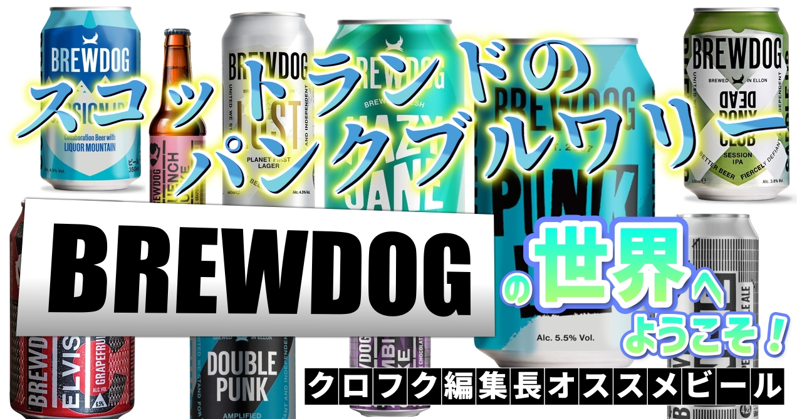
こんにちは、クロフク編集長です。
今回は、僕が大好きなスコットランドのクラフトビール「BrewDog（ブリュードッグ）」について、オススメの銘柄をお届けします。
ウイスキーや日本酒の記事では、価格帯や容量で区切ることが多いですが、ビールはちょっと違う。ブリュードッグは「常識に逆らう」をキーワードに、めちゃくちゃ個性的でパンクなビールを次々と生み出してるブルワリー。だからこそ、スタイルの多様性を楽しむ方がええんです。
さあ、ブリュードッグの世界に飛び込みましょう。
創業者のジェームス・ワットとマーティン・ディッキーは、当時のイギリスビール業界に心底ウンザリしていた。工業生産されたラガーばっかり、つまらねぇエールばっかり……。「これはあかん。自分たちで、本当に飲みたいビールを作ろう」。そう決めた2人は、古いバンの荷台からビールを売る生活をスタートさせたんです。
その時の合言葉は「さぁ、世界を変えてやろう」。
正気か……？でも、それがブリュードッグ。常識を打ち破る、革新的な製法で造りだされた高品質なビール。独創的で、時には過激で挑発的なマーケティング。
設立からわずか2年でスコットランド最大の独立系醸造所に。かつては英国売上No.1クラフトブルワリーとして、世界60ヶ国以上で販売され、直営バーは100店舗以上にまで拡大しました。日本でも六本木にアジア初のオフィシャルバーがありました（2025年末で閉店）。
2026年3月、ブリュードッグはアメリカのTilray Brands社に買収され、独立系ブルワリーとしての歴史に一つの区切りがつきました。多くのバーが閉店し、経営体制も大きく変わった。でも、ブリュードッグのビールは今も造られ続けている。ブランドの魂は、まだ死んでいない。
ブリュードッグの使命は、シンプル。
「人々を、俺たちと同じくらいクラフトビールに夢中にさせる」
それが、この記事を書く理由です。
ブリュードッグのビールは、日本ではまだまだ手に入りにくい。でも、以下の3本はネット通販で購入できます。まずはここから始めてみてください。
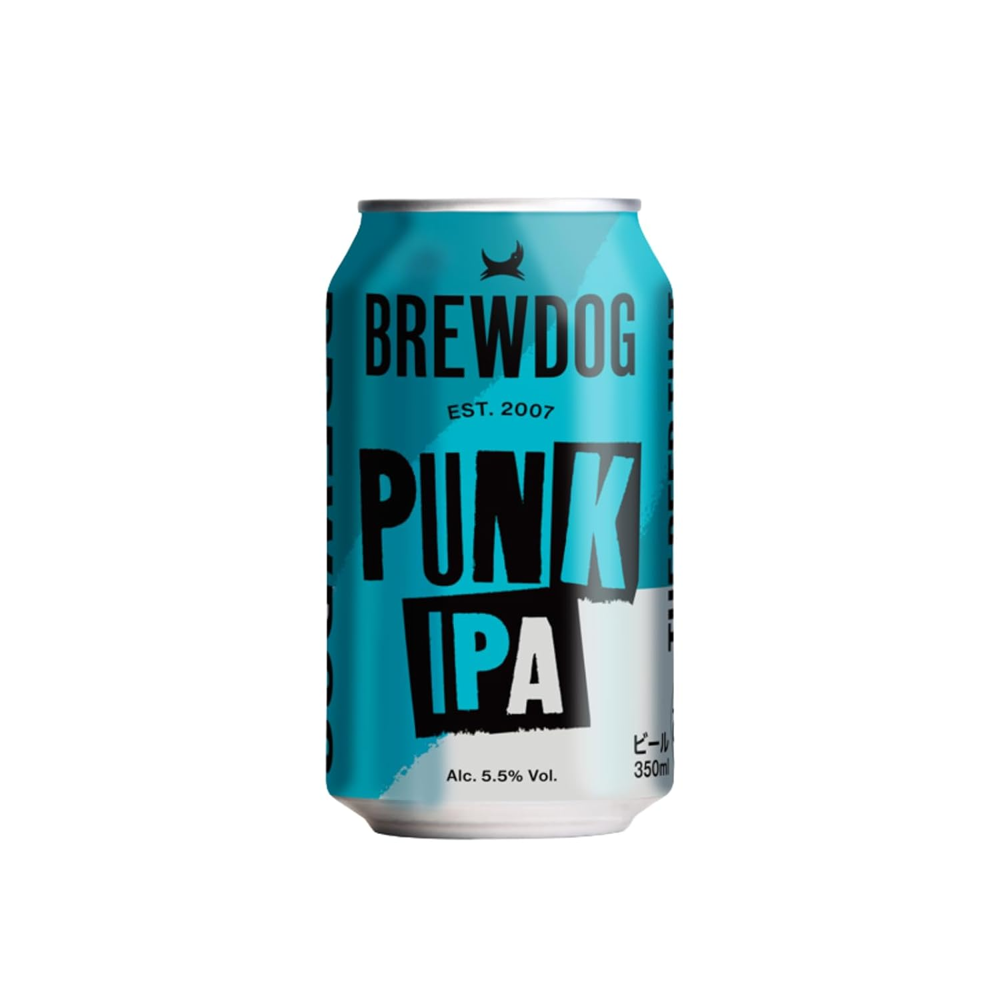
これはもう説明不要。ブリュードッグのフラッグシップであり、クラフトビール革命の象徴。
アルコール度数は5.4%。大量のアメリカンホップを贅沢に使い、ホップのアロマを最大限に引き出したIPA。クリアなゴールデンカラー。グレープフルーツとトロピカルフルーツの香りが広がり、後味はシャープな苦み。
「世界一のIPAを目指し、採算度外視で造られた至高のIPA」なんて説明もありますが、実際に飲むと「あ、この人たちマジだ」って感じるんです。ホップの苦味じゃなくて、生命力を感じる。パイナップル、ライチのようなトロピカルフルーツとキャラメル……ホップってこんなに多彩なんかって、初めて知らされる。
ブリュードッグを飲んだことない人は、ここからスタート。
▶ Amazonで見る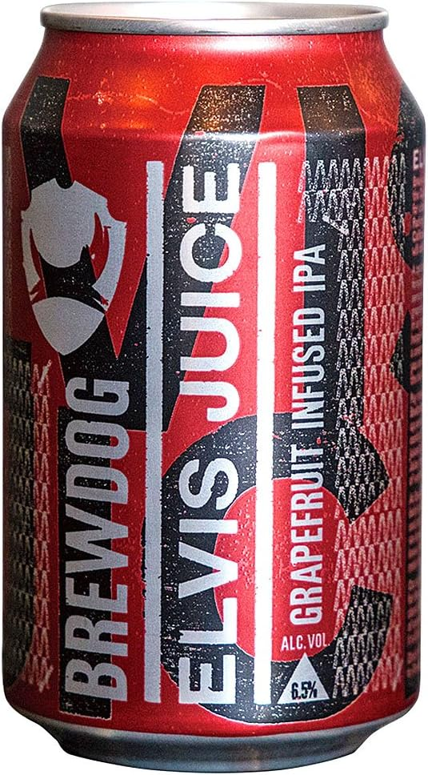
ホップとシトラスフレーバーの研究を重ねて造り上げたフルーティなIPA。この銘柄も、ブリュードッグを代表する1本。
パンクIPAよりも、若干フルーティーで親しみやすい。ホップの苦味はしっかりあるけど、シトラス感がそれを優しく包み込む感じ。飲み口が良くて、ついつい飲み進めちゃう危険性あり。
「ちょっと苦いビールはちょっと……」って人にも、「もっと複雑な味わいが欲しい」って人にも刺さる。バランスの取れた傑作です。
▶ Amazonで見る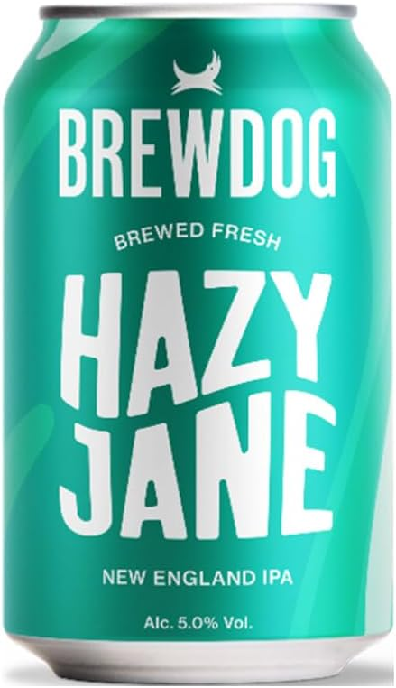
曇りが美しいニューイングランド IPA。
最大の特徴は、苦味を抑えたこと。その代わりに、ホップ由来の爽やかなフルーティ感が前に出てきます。スムースな飲み口で、いくらでも飲める危険性。
「IPAは好きだけど、あの強い苦みはちょっと……」という人にウケがいい1本。でも侮るなかれ。複雑さはちゃんと仕込まれてる。飲み進めるたびに、異なるフレーバーが顔を出す。
ニューイングランド系のIPAが好きなら、これは必飲。
▶ Amazonで見る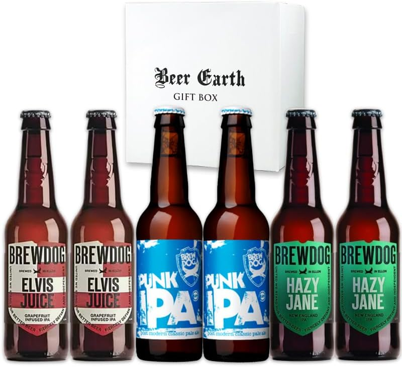
どれから飲むか迷うなら、この3本がそれぞれ2本ずつ楽しめる「ブリュードッグ 飲み比べ6本 ギフトセット（パンクIPA・エルビスジュース・ヘイジージェーン）」もあるので、ぜひ参考にしてほしい。
▶ ギフトセットを見るここからは、2026年4月上旬現在、ネットでの購入は難しい銘柄たち。でも、バーやショップで見かけたら迷わず手に取ってほしい。どれもブリュードッグの実力が詰まった1本です。
ブリュードッグの公式サイトには、ブリュードッグが飲めるお店・買えるお店のマップが掲載されているので、ぜひチェックしてみてください。バーで樽生を飲むもよし、購入してご自宅でゆっくり楽しむもよし。
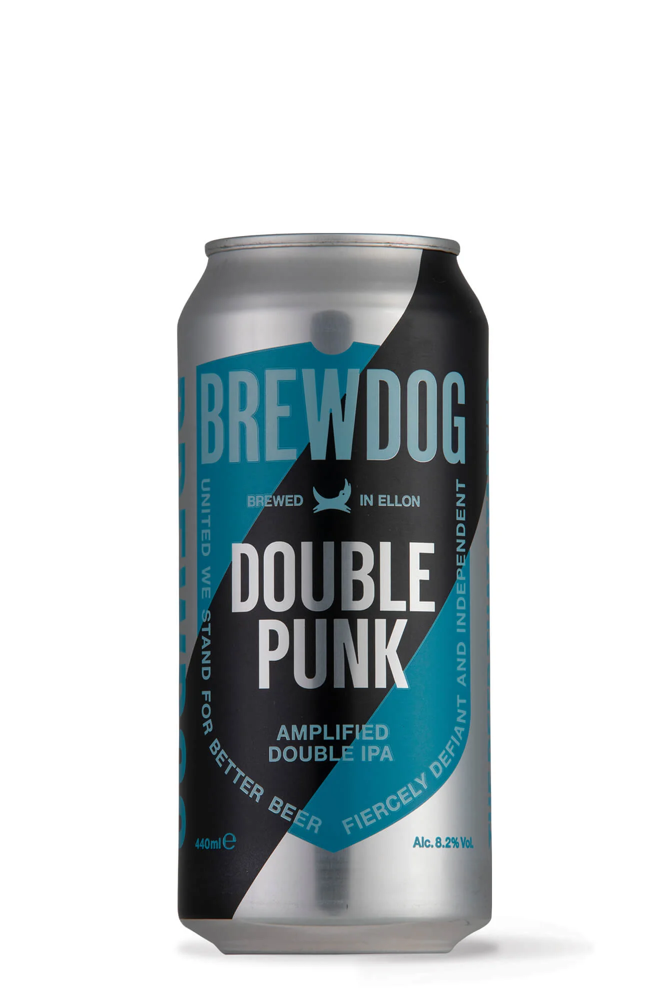
パンクIPAをさらに強烈にした、インペリアルIPA。アルコール度数は8.2%。
ホップの使用量も増えている。爆発するかのようなホップの香りが、飲む人を虜にします。「怒涛のアメリカンホップで強烈な印象」と表現されることもありますが、マジそれ。
IPAが好きな人、ホップが好きな人は、これを飲むとブリュードッグの本気が分かる。苦いし、苦いし、苦いのに……なぜかうまい。その不思議さを体験してください。
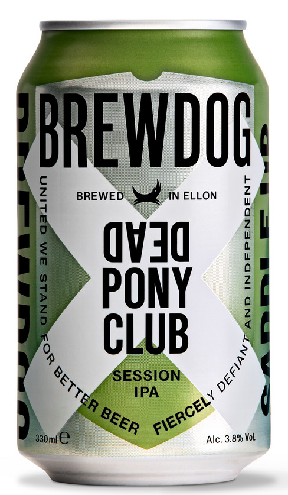
超爽快系アメリカンペールエール。アルコール度数は3.8%。
グラスに注ぐと、クリアーなペールストローカラー。「干草の上でそよ風に吹かれている」という、そんな心地よい印象が香りから漂ってくる。香ばしくも元気なアメリカンホップの香り。
口に含むと、南国系のトロピカルビターホップがフレッシュに舌の上を踊ります。軽やかなボディは、ほのかな麦芽の甘みとエキゾチックフルーツのような安心感に包まれて……ゴクゴク、止めどもなく飲めちゃう。
「ぜひ腰に手をあててノドを鳴らしながら飲んでください」って説明文に笑いましたが、マジでそんな感じ。アルコール度数が低いから、つい飲み過ぎちゃう危険なペールエールです。
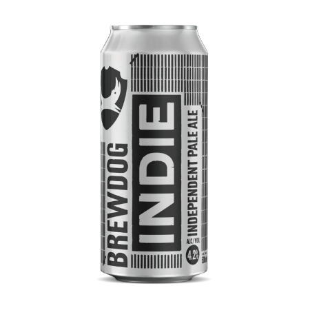
「いつでも、どこでも、誰でも楽しめるように」というコンセプトで造られた、ペールエール。アルコール度数は4.2%。
最初は「飲みやすいペールエール」を想像していたんですが、実際に飲むと意外と複雑。少しローストしたような味が広がって、すぐにフルーツ……柑橘系の味が広がってくる。そして最後に、ホップの苦味がジワッと。
「誰でも楽しめる」と「複雑さ」の両立。よくできたビールだなぁ、と思わせる1本。
ビール初心者からビールマニアまで、みんなが納得できる。そういう意味で「インディペンデント（独立心溢れる）」なペールエールなんです。
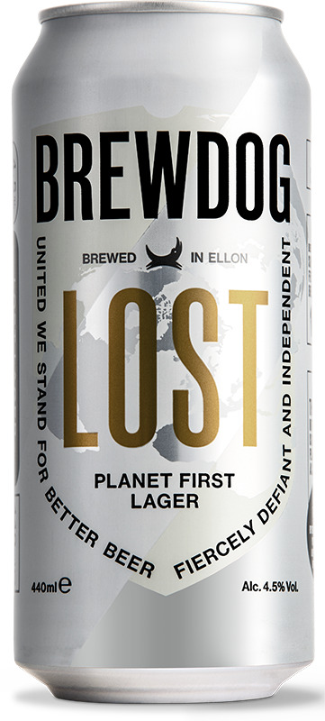
伝統的なドイツビールをベースに、ホップをふんだんに使ったラガー。ドイツ産のモルト、ホップ、酵母で造られたこと。そして、現代技術である「ドライホッピング」から発生する強いホップアロマが大きな特徴。
「伝統と革新が手を取り合った新鮮な味わい」というのが、ぴったりです。ドイツラガーの王道的な飲み心地と、ブリュードッグ流のホップ表現が融合している。
ラガーが好きな人にも、IPAばっかり飲んでた人にも刺さる。「ラガーってこんなに旨いんかい」って思わされる1本です。
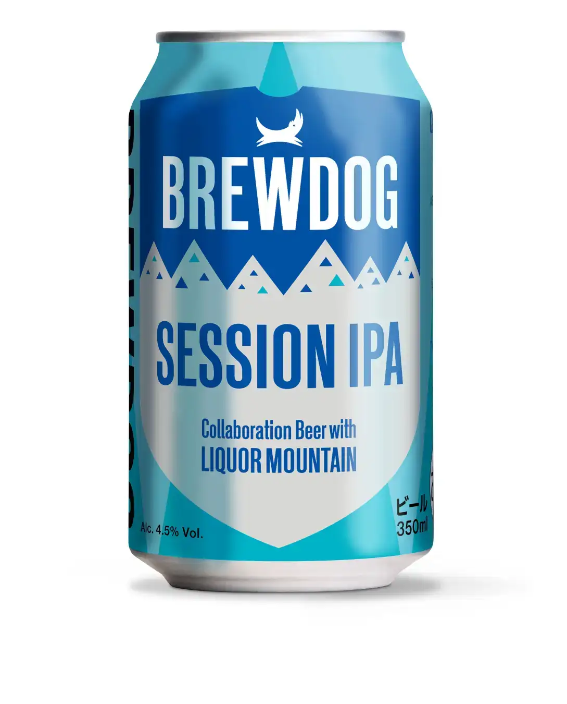
軽快な飲み口が特徴のセッション IPA。
セッション・ビールは、昔イギリスの労働者たちが、長時間パブで飲み続けるために造られたビール。つまり「何杯飲んでも大丈夫」っていうアルコール度数の低さが必須。
ブリュードッグのセッション IPA は、その概念を守りながらも、しっかりホップを活かしてる。軽やかなのに、ちゃんとIPAの個性がある。飲み会で何杯飲んでも、最後までホップの香りが心地よく続く。
「今日は飲んだくれたいわけじゃないけど、何杯か飲みたいな」という時のベストパートナーです。
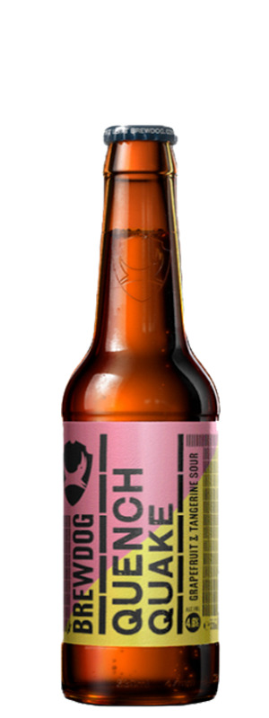
柑橘系の味わいが楽しめるサワーエール。
サワーエールは、乳酸菌や野生酵母を使うことで、爽やかな酸味を引き出すスタイル。QUENCH QUAKE は、そこに柑橘の爽やかさをプラス。夏に飲みたくなるような、爽快感。
IPAばっかり飲んでると「あ、こういう方向もあるんや」って思わされます。酸味とホップのコラボレーション。新しい世界です。
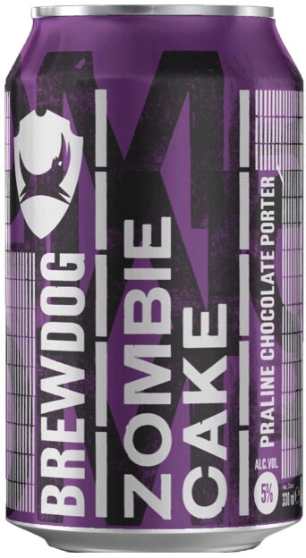
お菓子のような甘さと香ばしさを感じるポーター。チョコやコーヒー、ナッツ、バニラなどの香りと甘味が複雑に絡まり合う、濃厚な黒ビール。
ブリュードッグのラインナップは、IPA系が目立ちがちですが、こういう黒ビールも造ってるんです。ホップの魔術師だけじゃなくて、モルトの可能性も引き出してる。
「黒いビール=ビター」って固定概念を壊してくれる1本。甘くて、香ばしくて、複雑。夜遅くに、ゆっくり飲みたい逸品です。
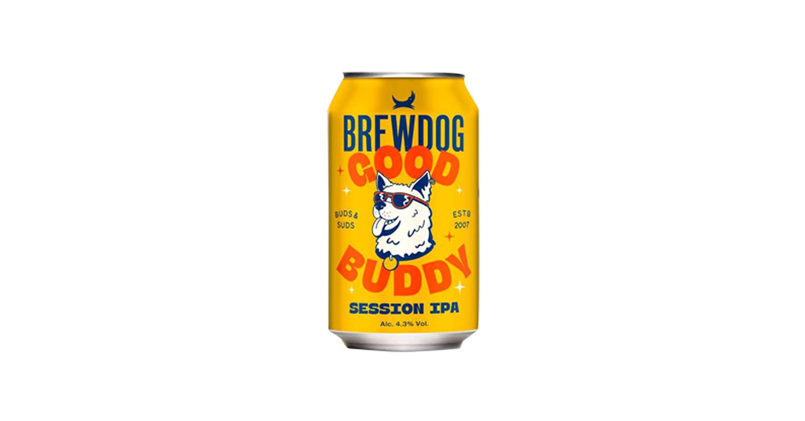
2026年3月、日本限定で新発売になったブリュードッグの新しいフラッグシップ。
「GOOD BUDDY」とは「良き相棒」という意味。ポジティブなバイブスをまとった犬のアイコン、セッションIPAの構えず楽しめる味わい、そして親しみやすいネーミング。
柑橘を思わせる爽やかなホップアロマと、軽やかな飲み口が特徴。苦味は穏やかで、香りは華やか。後味はすっきり。「クラフトビールの世界への新たな入口」であると同時に「日常に寄り添う"次の定番"を目指した」というコンセプトが素敵。
そして、GOOD BUDDY の売上の一部は、犬と人が共に暮らす社会を応援する活動へ活用される。ブリュードッグらしい、パンクで優しい1本です。
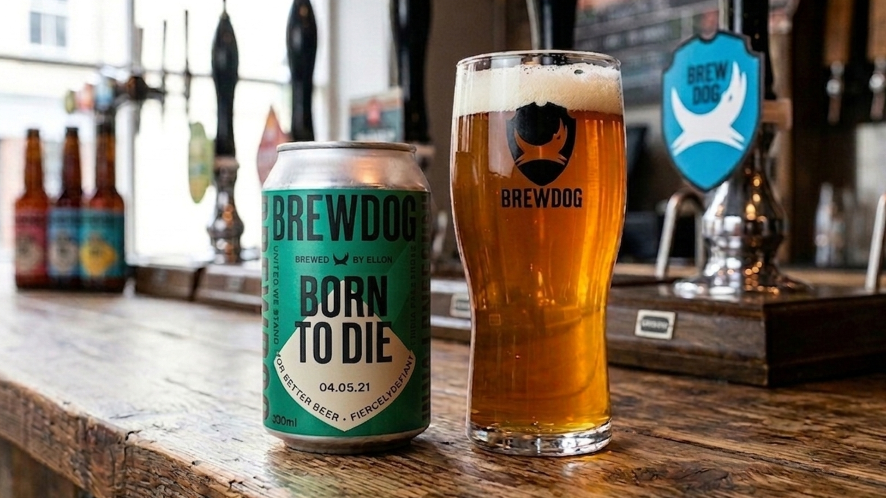
最後に、究極のビールを紹介させてほしい。
ブリュードッグの「BORN TO DIE」。
入手がとても難しい。でも、正直に言わせてほしい。ここまで紹介したすべての銘柄を超える、僕にとって人生最高の1本がこいつなんです。
もしも飲める機会があるなら、必ず飲んでほしい。
BORN TO DIE は、インペリアルIPAで、アルコール度数は8.5%。
その最大の特徴は、ホップの鮮度にこだわり抜いたという点。アマリロ、シムコー、モザイク、シトラというホップを惜しげもなく使い、IBU は 100 という高さ。
でも、ここからが重要。
このビールには、印字された「飲むべき日付」があります。製造日から35日間というカウントダウン。その期限を過ぎたら、このビールは「死ぬ」。
だから「BORN TO DIE」。生まれて死ぬ運命のビール。
つまり、ブリュードッグが言いたいことは、こういうことです。
「ホップの香りは、時間とともに劣化する。だから、このビールは『新鮮さ』の時間爆弾。飲むなら、今、今すぐ、できれば製造直後に飲んでくれ」
それは、クラフトビール界への一つの問いかけでもあります。
「黒いビールはボトルで何年も寝かせるけど、ホップが主役のビールってそれでいいの？」
答えは、no。
ホップの香りを最高の状態で飲み手に届けるために、ブリュードッグは航空便で輸入を申し込んだ。定温管理にこだわった。
全力で「新鮮さ」を守った。それが BORN TO DIE です。
2018年頃の話。行きつけのバーで、樽生のBORN TO DIEに出会った。
たった一杯、2,000円。ビール一杯にしては、とても高い。でも、その一杯が、僕のビール人生を変えた。
グラスに注がれた、黄金色のビール。
第一口──
「ッッ……」
語彙を失った。
ホップのアロマが、こんなに豊かなのか。グレープフルーツ、ライム、松の香り、そして青臭さまで。それらが、複雑に絡み合って、鼻孔を通して脳に直結する。
樽生だから、炭酸が適度で、ホップの香りの拡散がハンパない。冷えた状態で飲むと、ホップの苦味と甘さのバランスが……最高。
飲み進めるたびに、新しいフレーバーが顔を出す。シトラスの爽やかさ、モザイクホップのフルーティさ、シムコーの深い苦味。それがダイナミックに変わっていく。
後半、温度が上がり始めると、さらにホップが開いて……あ、もう終わりか。
でも、それでいいんだ。このビールは「その瞬間の最高」を目指してるから。
飲み終わった後、グラスの香りだけで、もう一杯飲んだ気分。
その時、僕は思った。
「ビールって、こんなに表現力豊かなものなのか」
「これが、ホップという植物の本当の可能性なのか」
「ブリュードッグは、本気で『クラフトビール革命』をしてるんだな」
正直、それ以来、他のビールで同じくらいの感動を味わったことがない。
BORN TO DIE は、ブリュードッグのパンクスピリットの極致だと思う。
「常識的には、ビールは寝かせておくもん」という固定観念を、真っ向からぶち壊す。
「新鮮さを最優先にする」という概念を、ビール業界に叩き込む。
「ホップという素材の可能性を、これでもかってくらい表現する」という執着。
そこには、金儲けなんかない。あるのは「人々を、俺たちと同じくらいホップに夢中にさせたい」という、ただの想い。
採算度外視。わがままとこだわりのかたまり。
それが、ブリュードッグです。
正直に白状すると、僕はあれ以来、BORN TO DIE を瓶で飲みました。でも、樽生ほどの感動はなかった。
それは、ボトリング後に時間が経ってるから。ホップが劣化し始めてるから。
だからこそ、このビールの狂気が分かる。
BORN TO DIE は「樽生で、製造直後に、即座に飲む」ことで、初めて本当の価値を発揮するビール。
バーで見かけたら、迷わずオーダーしてください。
ブリュードッグの「全力」を、飲んでみてください。
ブリュードッグは、僕たちに教えてくれました。
ビールは、常識を超えることができる。
お金儲けなんか度外視で、本気で造ったものは、人の心を動かす。
パンクスピリットは、死なない。むしろ、ビール業界をぶっ壊す。
あなたが次にビール売り場に行った時、ブリュードッグを手に取ってみてください。
そして一杯飲んでみてください。
「常識に逆らう喜び」を、味わってみてください。
ブリュードッグは、待ってます。
ブリュードッグのビールは、ただの飲み物ではない。それは「反逆」であり「表現」であり「哲学」そのもの。
ここで紹介した13本は、すべてブリュードッグの信念を体現したビールたち。常識に逆らい、新鮮さを貫き、ホップという素材の可能性を追求する——その覚悟が、1本1本に詰まっている。
あなたが PUNK IPA の苦みに身を委ねるなら、2人の創業者の想いも一緒に飲んでるんです。BORN TO DIE の香りに心奪われるなら、「採算度外視で最高を目指す」というパンクスピリットも一緒に味わってるんです。
ブリュードッグは、常識の外で、常識を超える。ぜひ、その世界に飛び込んでみてください。